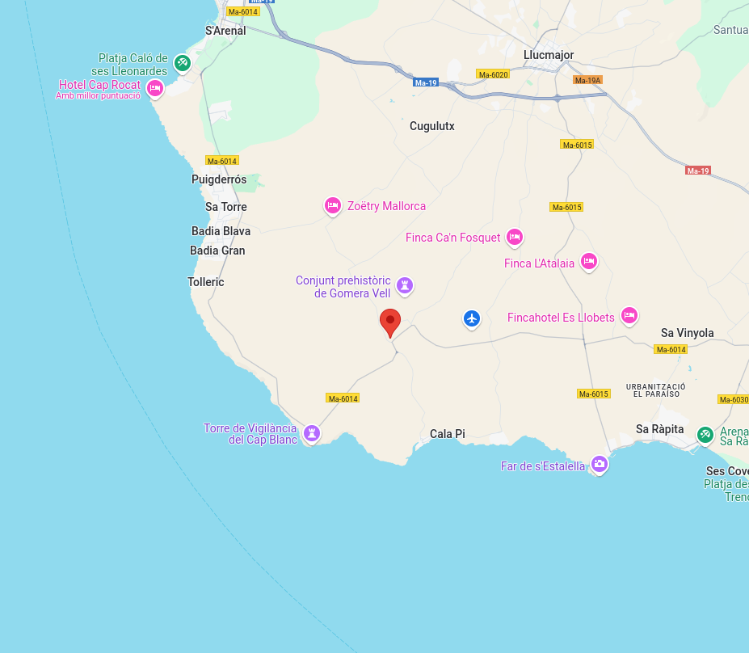

Descripció
El poblat prehistòric de Capocorb Vell pertany a la cultura dels talaiots, és un dels més grans i més ben coneguts de Mallorca, l'antiguitat és d'uns mil anys abans de Crist i fou ocupat fins ben entrada la colonització romana.
Ubicació
El Poblat Prehistòric de Capocorb està situat a l'antiga possessió de Capocorb Vell, al municipi de Llucmajor.

Imatges